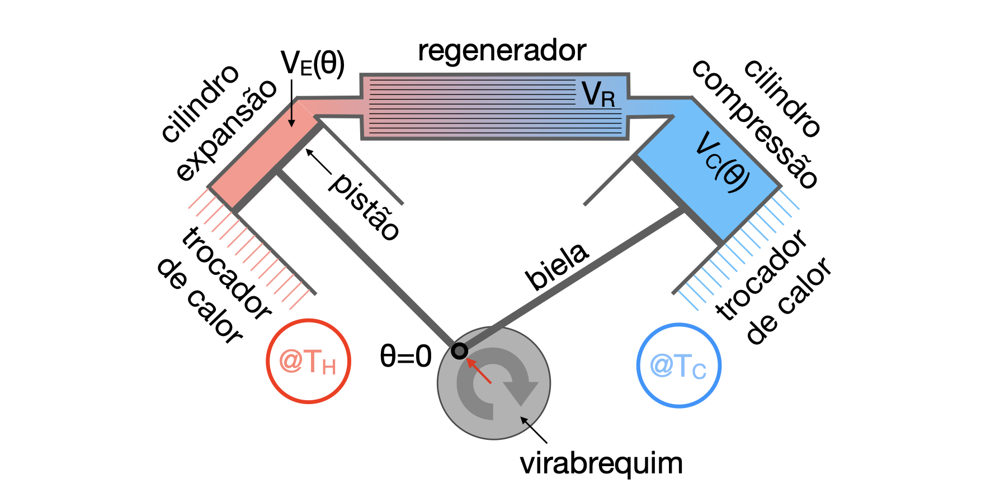
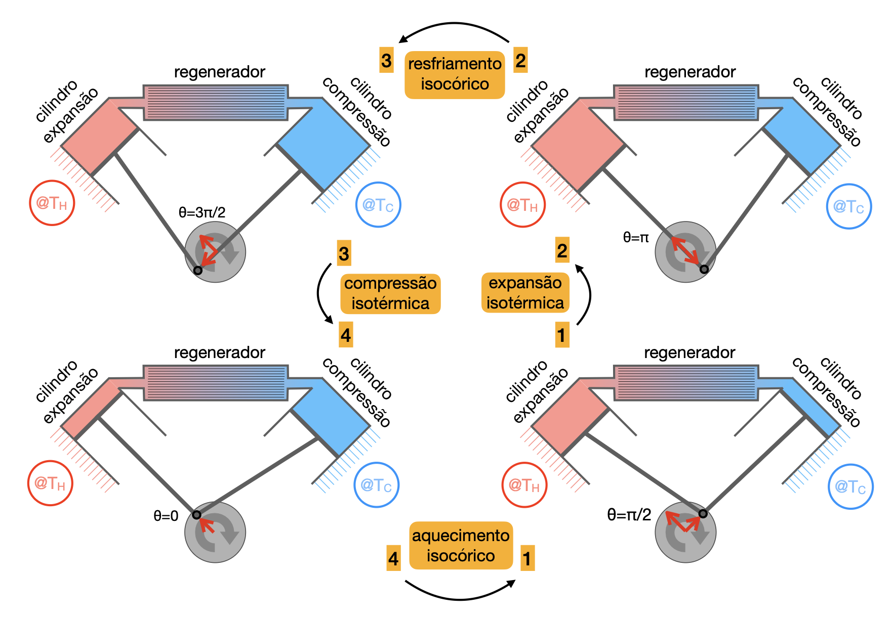

Varie a geometria e acompanhe como os volumes \(V_E\), \(V_C\), \(V_R\) e o volume total mudam ao longo do ciclo com regenerador.
Abrir simuladorO motor de Stirling tipo alfa utiliza dois cilindros independentes ligados por um regenerador térmico. Um cilindro está em contato com a fonte quente, o outro com a fonte fria, e o fluido alterna entre expansão, resfriamento, compressão e aquecimento.
O ponto central é que o regenerador substitui as trocas isocóricas externas por trocas internas de calor. No limite ideal, ele armazena o calor retirado do fluido no resfriamento isocórico e devolve esse mesmo calor no aquecimento isocórico.
Varie a geometria e acompanhe como os volumes \(V_E\), \(V_C\), \(V_R\) e o volume total mudam ao longo do ciclo com regenerador.
Abrir simuladorNa arquitetura alfa, o cilindro de expansão permanece acoplado ao reservatório quente \(T_H\), enquanto o cilindro de compressão permanece acoplado ao reservatório frio \(T_C\). Os pistões são acionados por um virabrequim, de modo que os volumes variam periodicamente com o ângulo \(\theta\).

Uma representação simples dos volumes dos cilindros é
Somando os dois cilindros ao volume fixo do regenerador, obtemos o volume total final ocupado pelo fluido:
É conveniente definir
| Estado | Ângulo | Volume total | Interpretação no ciclo |
|---|---|---|---|
| 1 | \(\theta_1=\pi/2\) | \(V_1=C-B\) | Início da expansão isotérmica no ramo quente. |
| 2 | \(\theta_2=\pi\) | \(V_2=C+B\) | Fim da expansão isotérmica; volume máximo. |
| 3 | \(\theta_3=3\pi/2\) | \(V_3=C+B\) | Fim do resfriamento isocórico; volume ainda máximo. |
| 4 | \(\theta_4=0\) | \(V_4=C-B\) | Fim da compressão isotérmica; volume mínimo. |
Assim, os volumes de referência que aparecem nos diagramas são
Consequentemente, as variações de volume nas quatro etapas são
O volume \(V_R\) não realiza trabalho mecânico diretamente, mas controla a transferência interna de energia entre as etapas isocóricas. Por isso, o regenerador é uma peça termodinâmica: ele reduz a necessidade de trocar calor com os reservatórios durante mudanças de temperatura.
O ciclo ideal com regenerador possui duas transformações isotérmicas, nas quais há troca de calor com reservatórios externos, e duas transformações isocóricas, nas quais a troca de calor ocorre internamente com a matriz regeneradora.

Caso geral. O fluido expande em contato com o reservatório quente, indo de \(V_1=C-B\) para \(V_2=C+B\). Para uma etapa reversível, \(T=T_H\), o sistema recebe calor externo e entrega trabalho:
Gás ideal. Como a temperatura é constante, \(\Delta U_{21}=0\). Assim,
Caso geral. O resfriamento isocórico ocorre para os ângulos \(\theta_2=\pi\) e \(\theta_3=3\pi/2\). Como \(V_2=V_3=C+B\), a variação volumétrica é nula:
A Primeira Lei nesta etapa pode ser escrita como
Como a temperatura do fluido diminui de \(T_H\) para \(T_C\), temos \(\Delta U_{32}<0\) e, consequentemente, \(\Delta Q_{32}<0\); isto significa que o fluido cede energia ao regenerador.
Gás ideal. Para calor específico molar constante,
Produção de entropia. A produção de entropia durante o resfriamento isocórico pode ser analisada a partir da troca de calor com a matriz sólida do regenerador, cuja temperatura local chamamos de \(T_{reg}(T)\). Como o processo é isocórico,
No limite ideal, o fluido e o material do regenerador encontram-se em equilíbrio térmico local em cada ponto do percurso, ou seja, \(T_{reg}(T)=T\). Nessas condições, o termo entre parênteses anula-se ponto a ponto, resultando em
Para um regenerador real, durante o resfriamento a temperatura da matriz difere levemente da temperatura do fluido, \(T_{reg}(T)=T-|\delta T|\), com \(|\delta T|\ll T\). Assim,
Substituindo esse resultado na integral do processo, encontramos
A produção de entropia é positiva, mas pode se tornar arbitrariamente pequena se o gradiente térmico entre fluido e regenerador for minimizado.
Caso geral. O fluido é comprimido em contato com o reservatório frio, indo de \(V_3=C+B\) para \(V_4=C-B\). Para uma etapa reversível, \(T=T_C\), o sistema rejeita calor externo e recebe trabalho:
Gás ideal. Como \(T\) permanece constante, \(\Delta U_{43}=0\). Logo,
Caso geral. O aquecimento isocórico ocorre enquanto o virabrequim se desloca de \(\theta_4=0\) para \(\theta_1=\pi/2\). Como \(V_4=V_1=C-B\), a variação volumétrica nesta etapa é nula:
Como o volume total permanece constante, a Primeira Lei pode ser escrita como
Durante a passagem pelo regenerador, a temperatura do fluido aumenta de \(T_C\) para \(T_H\); portanto, \(\Delta U_{14}>0\) e \(\Delta Q_{14}>0\). O fluido recebe calor armazenado previamente na matriz sólida do regenerador durante a etapa \(2\to3\).
Gás ideal. Para calor específico molar constante,
Produção de entropia. A produção de entropia nesta etapa também é analisada pela troca de calor com a matriz do regenerador. Como o processo é um aquecimento isocórico, \(dQ=n c_V^{molar}(T,V_B)dT>0\). No limite ideal, \(T_{reg}(T)=T\), e então
Para um regenerador real, a matriz pode estar ligeiramente mais quente que o fluido, \(T_{reg}(T)=T+|\delta T|\), com \(|\delta T|\ll T\). Com esta consideração,
Substituindo o resultado acima na expressão de produção de entropia, encontramos
Como no resfriamento isocórico, a produção de entropia é positiva e será tão pequena quanto for o gradiente térmico entre fluido e regenerador.
A produção total de entropia associada às etapas isocóricas é a soma das contribuições do resfriamento \(2\to3\) e do aquecimento \(4\to1\):
No limite ideal, o fluido e o material do regenerador encontram-se em equilíbrio térmico local em cada ponto do percurso. Assim,
Para um regenerador real, a soma das contribuições isocóricas permanece positiva:
A produção de entropia será tão pequena quanto for o gradiente térmico entre fluido e regenerador.
No ciclo de Stirling com regenerador, o fluido de trabalho percorre quatro processos reversíveis: duas transformações isotérmicas, em contato com reservatórios térmicos às temperaturas \(T_H\) e \(T_C\), e duas transformações isocóricas, nas quais o fluido troca calor apenas com o regenerador.
Como o sistema retorna ao estado inicial após completar o ciclo, a variação de energia interna é nula:
No caso com regenerador perfeito, as etapas isocóricas \(2\to3\) e \(4\to1\) trocam calor apenas entre o fluido e o regenerador. Esse calor é armazenado e posteriormente devolvido internamente, sem participar das trocas de calor com os reservatórios externos. Assim,
No caso ideal com regenerador perfeito, as etapas isocóricas são reversíveis e não há produção de entropia: \(\Delta S_{\text{prod}}^{23}=\Delta S_{\text{prod}}^{41}=0\). As únicas trocas de calor com os reservatórios ocorrem nas isotermas:
Portanto, temos
A eficiência desta máquina térmica é
Utilizando a relação acima, encontramos
No caso de um gás ideal, podemos relacionar explicitamente o calor e o trabalho com as variações de volume do sistema. A partir da descrição geométrica, os volumes nos quatro pontos do ciclo são
Na expansão isotérmica \(1\to2\), a energia interna do gás ideal não varia, \(\Delta U_{21}=0\), e o calor absorvido é igual, em módulo, ao trabalho:
Na compressão isotérmica \(3\to4\), também temos \(\Delta U_{43}=0\), de modo que
As etapas isocóricas \(2\to3\) e \(4\to1\) satisfazem, para gás ideal:
No caso do regenerador ideal, o calor trocado no processo isocórico é totalmente armazenado e devolvido pelo regenerador, sem contribuição líquida para \(\Delta Q_H\) e \(\Delta Q_C\). O trabalho por ciclo é, portanto,
Como \(V_2/V_1=V_3/V_4\), a eficiência é dada por